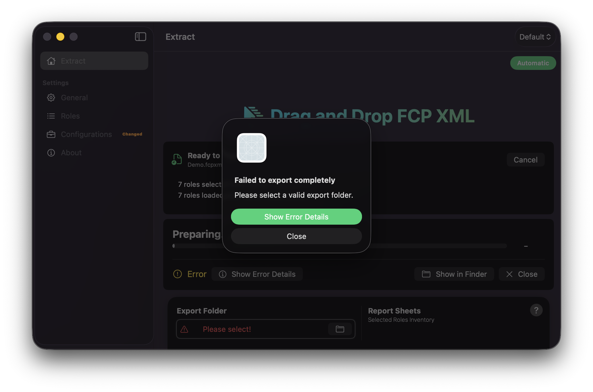

Troubleshooting
Below, you will find a comprehensive list of common issues users may encounter, accompanied by solutions to resolve them.
If you are still stuck after following these steps, open the logs (Help → Open Logs) and retain the log files from the Logs folder when seeking further help.
How to access the logs in Production Data?
To access the logs for Production Data, navigate to the Help menu and select Open Logs.
This opens the Logs folder in Finder and writes a current snapshot of application activity to productiondata_log.txt. During parse and export, Production Data also writes openfcpxmlkit_log.txt in the same folder.
Info
Both files live under Application Support for Production Data. Share them only if you are comfortable doing so when requesting support — they may include project and file names from your machine.
Failed to export completely

Production Data cannot write the Excel workbook until you choose an export destination.
You will see this when:
- The Extract footer shows
Please select!next toExport Folder - You start an export (drop,
Choose File,File → Open…, orStart Export) without a folder selected - The alert reads
Failed to export completelywith the messagePlease select a valid export folder.
On Extract, click the folder control in the footer, or open General Settings → File and choose a destination under Export Destination. Select a folder you can write to (for example on your Mac, an external drive, or a mounted network volume). Confirm the footer no longer shows Please select! — it should display the folder name — then provide your project again, or press Start Export if you are in Manual mode.
Info
The export folder is remembered with a security-scoped bookmark. Production Data does not store a plain file path as the source of truth. If the volume is disconnected later, see
Export Folder shows “Missing Folder!”
The footer (and General → File) shows Missing Folder! when a previously chosen destination can no longer be resolved — for example the drive was ejected, the network volume is offline, or the folder was moved or deleted.
Reconnect the drive or volume if it was disconnected, then click the folder control and choose the destination again (or a new one). Right-click the folder control and choose Clear Path if you need to remove the old selection first, then pick a folder again.
Start Export is disabled or greyed out
In Manual mode, Start Export stays disabled until a valid export folder is selected. Set an Export Folder first, then press Start Export.
See also Export Mode.
The export fails with an alert
When an export does not finish successfully, Production Data shows Failed to export completely.
- Press
Show Error Detailson the alert, or - Press
Show Error Detailsin the progress footer on Extract
This opens the Failed Tasks window with the file path and the error message for each failure. Use that text when searching this page or when contacting support.
Press Close on the progress footer when you are finished reviewing the result.
Roles tables are empty on launch
The Roles panel stays empty until you load an FCPXML project. Tables appear only after a successful roles session.
Drop an .fcpxml or .fcpxmld file onto Roles or Extract, drag a timeline / compound clip from Final Cut Pro, or use File → Open… (⌘ O). Wait until the Roles footer shows roles loaded from your project, then review the Video and Audio tabs and export — or switch to Extract and press Start Export in Manual mode.
Info
There is no Clear or Refresh control for Roles. To refresh the list, load a project again.
No audio or video roles found
After loading a project, Roles may report that no audio or video roles were found. Confirm the file is a Final Cut Pro XML export (.fcpxml / .fcpxmld) or a timeline / compound-clip drag that contains FCPXML. Prefer File → Export XML from Final Cut Pro for a full project document when possible. For compound clips dragged from Final Cut Pro, allow Production Data a moment to stage the file — root-level compound clips are normalised before roles are read. You may also try exporting XML again from Final Cut Pro and reopening the new file.
If roles still do not appear, open the logs (Help → Open Logs) and contact support with openfcpxmlkit_log.txt.
Dropping a project on Roles does nothing useful / stays on Roles
Behaviour depends on Export Mode:
- Automatic — drop on Roles should switch to Extract and begin the export (after a folder is set).
- Manual — Roles stays open so you can review enable/disable settings. Switch to Extract and press
Start Exportwhen you are ready.
If you expected an immediate export, switch to Automatic under General → File, or use ⌘ ⇧ E.
Only one project is accepted when I drop several files
This is intentional. Production Data processes one FCPXML project per action. If multiple items are offered at once, only the first item is used.
Provide one project at a time.
Media Summary lists files as missing, but the media is on disk
Media Summary is an optional sheet. Production Data reads media paths from the FCPXML and checks whether those paths exist — it does not open or copy your media files.
Paths may appear as missing when:
- You dragged a timeline or compound clip from Final Cut Pro (or used a text clipping), so the project was staged in the application Cache without a neighbouring media folder
- Relative paths in the XML cannot be resolved against the source location
- The media volume is offline or the files have moved since the project was edited
The rest of the Excel (and optional PDF) report still exports normally. Turn off Media Summary under Sheets if you do not need this sheet, or open an on-disk .fcpxml / .fcpxmld beside its media when you need more accurate missing-media checks.
When the sheet is enabled and no referenced media is missing, Excel and PDF keep the headers and show a No Missing Media status row — that is expected, not an error.
Info
Checking Distinguish Original and Proxy Media only splits Missing Original / Missing Proxy columns; it does not grant broader disk access.
Install Location Warning
macOS may show Install Location Warning if Production Data is not running from the Applications folder.
Move the application into /Applications, then launch it again. Choose Don't show again only if you intentionally run it from another location and accept the risk of sandbox or bookmark quirks.
Couldn’t create or rename a configuration
Named configurations must be unique. If a configuration with the same name already exists (in the list or as a file on disk), Production Data refuses to overwrite it and shows an alert such as Couldn't create configuration.
Choose a different name. The built-in Default configuration cannot be saved as a named file, renamed, or deleted.
See Configurations.
Configurations shows a “Changed” badge
The orange Changed badge means the active non-default configuration has unsaved edits compared with its saved preset.
- Press
Update Active Configuration(⌘S) to save, or - Discard changes from the Configurations panel or menu (
⌘Z)
Exports still use your current in-memory settings even when Changed is visible — the badge is a reminder to save the preset if you want those settings kept for next time.
Notifications do not appear
Under General → Notifications:
- Confirm
Notification Frequencyis not set toNever. - Press
Open macOS Notification Settingsand allow notifications for Production Data. - Remember that Production Data may only appear in Notification Settings after the first authorisation prompt.
- When Production Data is the frontmost app, banners may be silent or less obvious — check Notification Centre.
Each Report Step sends intermediate banners without sound; the final completion notification uses the default sound.
Dock progress ring does not show
Enable Show Progress on Dock Icon under General → Notifications. Progress appears only while an export is running.
Clean Cache — when should I use it?
File → Show Cache reveals the temporary FCPXML staging folder. File → Clean Cache (⌘ K) empties that folder only.
Use Clean Cache if staging files have accumulated after many Final Cut Pro drags or text clippings. It does not delete preferences, Configurations, Logs, or your export folder.
Clean Cache is disabled while an export or roles load is in progress. Wait until the run finishes, then clean.
Info
Cache files may be named like FCP Drop-…. Export folders and .xlsx / .pdf names still use the project or clip name from the timeline — not the Cache staging name.
PDF export looks different from Excel or truncates text
Create PDF Report is experimental and optimised for A4 landscape. Tables paginate across pages and cell text may truncate. Matching sheet pages share a tint.
For the complete dataset and full column control, use the Excel (.xlsx) workbook. The PDF uses the same active Configuration (sheets, columns, roles, timecode, and filters) — there are no separate PDF-only settings.
See Create PDF Report.
Protect Sheets — I cannot open the file / where is the password?
Protect Sheets applies an Excel worksheet edit lock so cells are harder to change by accident. It is not file-open encryption and does not set a workbook password.
Excel still opens the file without a password. Anyone can turn protection off in Excel. PDF export ignores this option — use Preview’s Encrypt (or another PDF tool) if you need a password-protected PDF.
The spreadsheet is missing sheets or columns I expected
Exports follow the active Configuration:
- Check Sheets for which worksheets are enabled.
- Check Columns for enabled workbook columns.
- Check Roles — disabled roles are omitted from the report.
- Confirm options such as
Exclude Disabled ClipsandInclude Markers Outside Clip Boundariesunder General → File.
The Markers Hidden column appears only when Include Markers Outside Clip Boundaries is on; it is not listed under Columns.
If the role inventory Total footer is missing, check Columns. Excluding Timeline Out or Clip Duration omits the Total footer entirely (Excel and PDF).
An enabled sheet shows “No … Found” or looks empty
Enabling a sheet under Sheets includes that section in the Excel workbook and optional PDF. When the project has no matching items, the sheet is not omitted — Excel and PDF keep the headers and show a single status row, for example:
No Markers FoundNo Keywords FoundNo Titles & Generators FoundNo Transitions FoundNo Effects FoundNo Speed Change Effects FoundNo Non-Std Effects FoundNo Roles FoundNo Missing Media(onMedia Summarywhen nothing is missing)
This is not an export failure. Confirm the timeline actually contains the items you expect for that sheet, or turn the sheet off if you do not need it.
Info
Individual per-role inventory tabs may still be omitted when empty. Summary keeps its project-metrics layout rather than a No … Found status row.
Excel shows “Non-Std Effects & Templates” instead of the full name
Excel limits worksheet names to 31 characters, so the workbook tab would appear as Non-Std Effects & Templates. The Sheets toggle and Extract status bar use the full name Non-Standard Effects & Templates.
See Sheets.
Drag and drop from Final Cut Pro does not start an export
Set a valid Automatic starts immediately; Manual waits for Start Export on Extract. Drop onto Extract or Roles (or the Dock icon), or use Choose File / File → Open…. Finder text clippings are accepted only when they contain FCPXML content, and only one project is processed per action.
If nothing happens, try File → Export XML from Final Cut Pro and open the .fcpxml / .fcpxmld file instead.
Library folders failed to initialise
On first launch, Production Data creates its Application Support folders (preferences, Configurations, Logs, Cache). If you see Failed to initialize Library folders, free disk space, ensure the app may write inside its sandbox container, then quit and reopen Production Data.
If the alert persists, contact support with a description of your macOS version and install location.